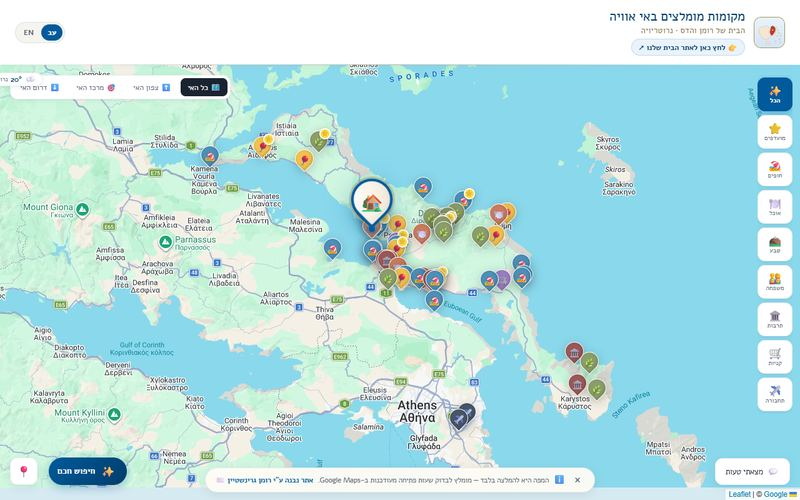

מפות וכלים על נתונים

כלי
מחולל דו"ח חברתי להתחדשות עירונית
ממלאים שלב אחרי שלב לפי מדריך 3.0 של הרשות להתחדשות עירונית, ומקבלים דו"ח. כלי עזר עצמאי.
לכלי ←
מפה
מפת המלצות לאי אוויה
עשרות מקומות על מפה: חופים, מסעדות וטיולים, עם סינון.
למפה ←
כלי
חדשות אוויה בעברית
סיכום יומי אוטומטי בעברית מחמישה אתרי חדשות מקומיים, מתורגם בעזרת AI.
לאתר ←